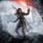

 Rise of the Tomb Raider
Detalles

Descripción

Rise of the Tomb Raider: Edición 20 aniversario incluye el juego de base y el pase de temporada con contenido totalmente nuevo. Explora y defiende la Mansión Croft en la nueva historia "Blood Ties", defiéndela contra una invasión zombi en "Lara’s Nightmare". Sobrevive en condiciones extremas junto a un amigo en el modo Aguante cooperativo online y atrévete con la nueva dificultad "Superviviente extremo". También podrás disfrutar de un atuendo y arma inspirados por Tomb Raider III, así como 5 skins clásicos de Lara. El DLC existente te retará a explorar una nueva tumba que alberga un terror antiguo en Baba Yaga: el templo de la bruja y combate hordas de depredadores infectados en El despertar de la fría oscuridad.
Características
- El viaje de Lara – Lara descubre un antiguo misterio que la coloca en el punto de mira de una brutal organización conocida como la Trinidad. El objetivo de Lara es dar con el secreto de la inmortalidad antes que ellos y en su camino descubre el mito de la ciudad perdida de Kitezh. Sabe que debe alcanzar este lugar antes que la Trinidad y por ello parte a Siberia en su primera expedición como saqueadora de tumbas.
- Una mujer contra la naturaleza – En "Rise of the Tomb Raider" Lara no solo se enfrenta a enemigos de todo el mundo, sino también al propio mundo. Caza animales para fabricar armas y busca recursos raros en ecosistemas llenos de vida. Te toparás con paisajes tan hermosos como hostiles, llenos de lugares traicioneros y superficies inestables que obligarán a Lara a ponerse a prueba como nunca antes.
- Combate guerrillero – Aprovecha en el entorno para obtener ventaja, trepa por los árboles y sumérgete en el agua para evitar o eliminar a los enemigos. Configura tu equipo, armas y munición para adaptarlo a tu estilo de juego, ya sea sigiloso o más enfocado a la acción. Fabrica explosivos al instante para sembrar el caos y utiliza los arcos y los piolets de Lara como solo ella sabe hacerlo.
- El regreso de las tumbas – Las tumbas han vuelto, más grandes y mejores que nunca. En "Rise of the Tomb Raider" podrás explorar enormes y asombrosos lugares antiguos plagados de trampas mortales, resolver emocionantes puzles y descifrar textos antiquísimos para desenterrar criptas que te abrirán un mundo lleno de secretos para descubrir.